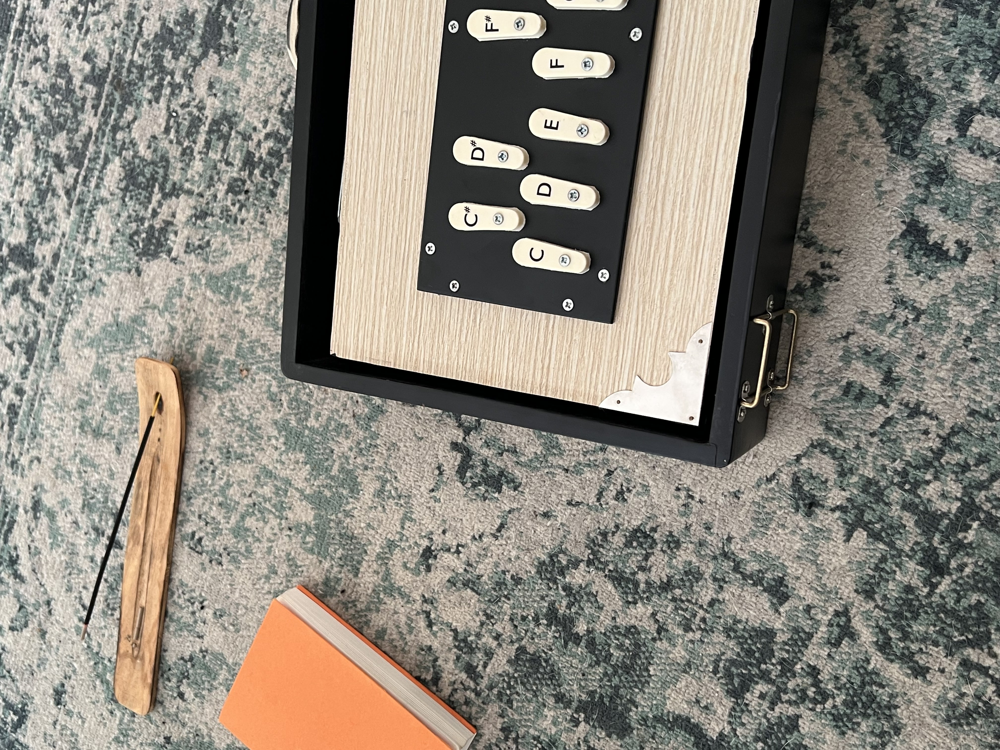

808MANTRA IS A WORKING TITLE
The seed of inspiration for this project proposal started simply with 'playing around'/jamming session/meditation in the studio. Seemingly an antithesis - the '808', the seminal drum computer/ drum machine at the inception of House and Techno; and the concepts of mantra/drone/meditation. As if by accident, playing in a certain way, plugged in a another way, but with the same techno sequence, drones emerge from rhythms. What started as an experiment with the 808 and a simple sound mixer became a two day long meditation session - and a sort of active meditation. Improvising with set parameters and limits (not self imposed) which enabled a condition of 'letting go' and a profound state of flow.
I have always been very drawn to ambient music, drone sounds, to the more introvert styles, american minimalism (such as La Monte Young) and Raga. Throughout my journey have I never expected these two worlds would blend like this - drum machine/drone - rhythms become tones, grooves incantation.
'808 MANTRA' RECORDINGS
Here you can listen to exercepts from the 2 day jam session:
AN ACTIVE PRACTICE
I believe from personal account in the meditative benefit of an active sound practice. Interfacing with the instrument which produces the frequencies that induce a state of trance, embodying the sonic/somatic experience as a whole. I have found myself playing for hours on end, 'tuning in'.
PARTICIPATION
Picking an instrument - piano, violin, tanbura - is not easy.
As I mentioned set conditions - they can become an invitation for anyone (everyone) to play.
- turning knobs on a preset synthesizer;
- plucking a string amplified through multiple FX pedals;
- playing a Shruti Box;
- 3 notes on an organ/Harmonium;
- a Tibetan bowl with a microfone;
- singin OM into an echobox;
None of this requires experience, virtuosity or even musicallity.
Yet, it allows the act of 'play'.
Of Engagement with the 'other'.
The state of flow.
Ritual and Invocation.
click the image to hear a piece I wrote...
SHRUTI BOX
improvisation with a shruti box, a traditional Indian microtonal instrument used for tuning and meditation. Manipulated through the computer or other effects. It requires very little skill, allowing the player to enjoy it fully. I also provide an audio example of a recording, and a picture of it.
GENERATIVE SOUND
Exploring sound as a generative medium through coding. Using programming languages such as MaxMSP to create generative soundscapes and interactive installations. The focus is on the relationship between sound, space, and the listener's experience.
A video example of a program I built to play generative music. Tuned like a tanpura, Instead of tuning in ABCDEFG. Think of it like a pipe organ - There are many oscillators. Each oscillator is the equivalent of a pipe. I can have 24, 36, 48, etc... pipes/oscillators. The sound is always evolving gently. The intention is to create a self playing piece that can aid meditation, or a system that can be played by multiple players at the same time:
WHAT THIS IS
Could fit into a performance where the border/hierarchy between performer and audience has been eroded to the point they become one. Maybe an interactive installation? An attempt at a meditation session? A ritual of sorts? A low-level workshop? I don't have an answer to this. I'm not interested in a defenition either. I think it does belong in a 'play' space, a playgroung. A small scale stage. (more examples?)
WHY WAKING LIFE
A playground for group experimentation, magic and transformation.
How it would work?
This could fit in a small stage, a spot used for other performing arts, workshops or meditation sessions. Could last anywhere from 1 to 3 hours. Technically, I would bring all the instruments and equipment needed for the audience to play around with. The only requirements from the production would be extra dynamic microphones, cabling and a small PA system - 1 sub and 2 tops would suffice. As for the stage plot, a large table and chairs OR cushions and a carpet on the floor. There's my laptop and my sound mixer, and everything connected to it so I 'control' (for lack of a better word) what the audience is playing.
There's a need for a bit of 'workshop' as well. The performance would be conducted as follows: setting up, connecting everything and begin with playing a drone. Following a casual interaction with the audience hanging around, inviting them in and explaining the project, allowing them to explore any instrument/machine of their liking. People can be shy. To unlock participation, I would invite people I know to join in the moment. More people bring more people. As I mentioned previously, every instrument/machine or musical object I'm bringing requires no prior knowledge. Its all about feeling and intuition. Of course, I would make sure to explain everything. Due to the modular & fluid nature of the 'system', it allows me to play and step out of it as I please. Likewise, an audience member can join, play and leave as they please.
ABOUT ME
I am a musician. Played in bands, performed live set (not as a DJ), worked in theatre as a sound designer, assisting dramaturgy and music performance.
Studied music technology and have been on an ongoing researching on sound & new media.
//Discomfort Dispatch . A small improvisation festival. Participants were randomly paired in duos without prior knowledge. The outcome - initial awkwardness to new friendships, collaboration and growth
//KKE . Was an almost impro project. KKE & Friends - 10 friends, not bandmates invited to play an unrehearsed Kosmich/Kraut concert. They knew the band and the songs, but no one knew what would happen. Could have been a disaster. Instead, turned out a success.
No finished products. Only happened once. The audience revelled at the sight of 10 people cramped in between cables and gear, right at the middle of it (no stage), just improvising. The performers reported a 'cathartic & magical' feeling.